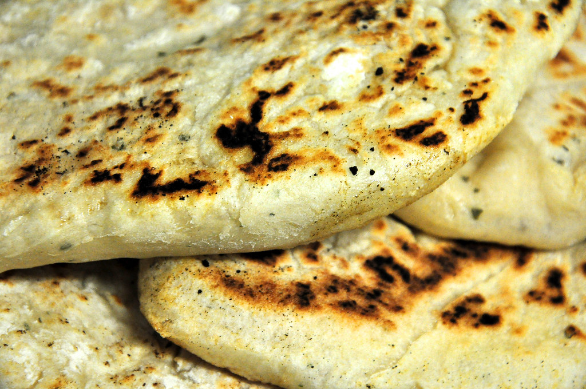
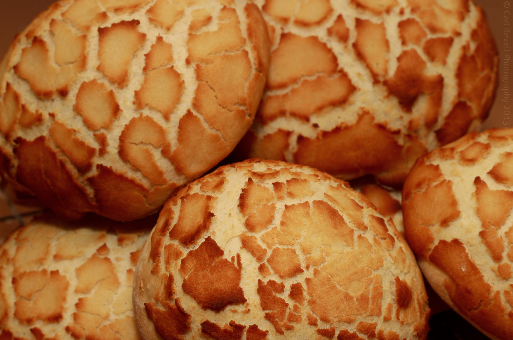
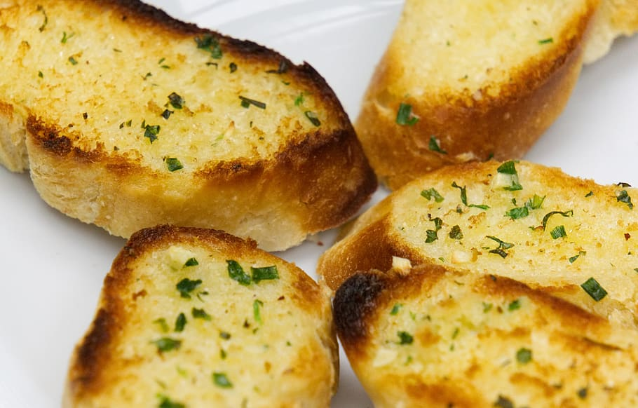

All About Bread




- Bread has been around for atleast 12,000 years.
- Sliced bread was invented in 1928 by Otto Rohwedder.
- The ancient Eqyptians used bread as currency.
- There are over 100 different kinds of bread.
- A combine harvester can harvest 70 loaves worth of wheat in 9 minutes.
- The Great Fire of London started at a bakery.
- Sandwiches are named after the 4th Earl of Sandwich, because he ate bread with beef in the middle.
- An average of 380 sandwiches are eaten every second in the UK.
- Germany has the largest consumption of bread per capita worldwide.
- French toast wasn't invented in France.
- The biggest loaf of bread ever made was 1,571kg.
- Febuary the 23rd is National Bannana Bread Day.